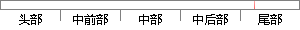

1-1 使用任务创建函数，分别创建2个任务，并显示出任务的栈地址和函数的入口地址。
片段位置图

相似结果
相似片段：[图文] 上一节我们使用2个固定的任务验证了操作系统任务...了任务,因此,这个入口参数还必须能够关联到任务的栈...创建,在WLX_TaskCreate函数内分别对TCB和栈进行初始...
| 标题 | 《第3章第2节 任意任务间的切换_ifreecoding_新浪博客》 |
| 对比库 | PaperRater云论文库 |
| 网址 | http://blog.sina.com.cn/s/blog_908da746010119eu.html |
| 相似率 | 68.75% （轻度抄袭） |
※ 片段修改建议 ※
近似词参考：- 使用：利用
- 创建：建立 创立
- 分别：别离 划分 离别
- 任务：使命 义务
- 入口：进口
- 地址：地点
系统自动生成语句：1-1 利用使命建立函数，别离建立2个使命，并显示出使命的栈地点和函数的进口地点。
注：本片段修改建议为系统自动生成，仅供参考。